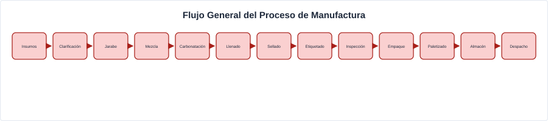
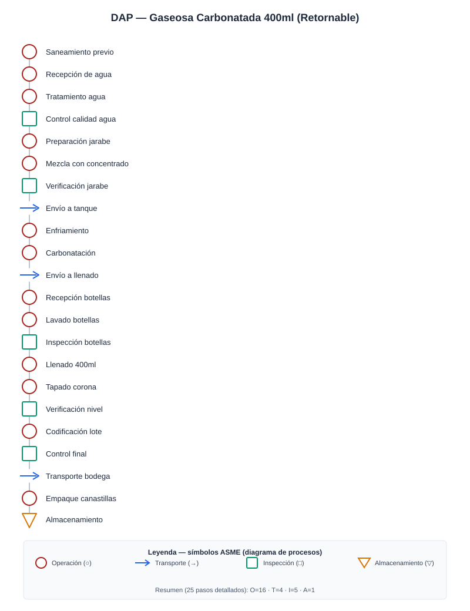

Este módulo consolida el levantamiento en planta embotelladora de referencia (Bogotá), los diagramas analíticos de proceso y los indicadores AS-IS que alimentan el modelo de simulación y las propuestas de mejora.
Vista de Planta
Layout de planta oficial — pendiente de subir a unal:Archivos página por el equipo
Flujo General del Proceso

Visita técnica y productos
A partir de la visita técnica a la planta embotelladora de referencia en Bogotá y los fundamentos teóricos abordados en el módulo, se seleccionaron tres referencias para el análisis: Gaseosa carbonatada (retornable 400ml), Bebida energética (lata 473ml) y Agua en garrafón (20L).
Diagrama de Análisis de Proceso (DAP)
Se elaboraron Diagramas de Análisis de Proceso para cada producto, documentando operaciones, transportes, inspecciones y almacenamientos según la norma ASME.

Gaseosa Carbonatada 400ml (25 pasos)
Resumen: O=16 · T=4 · I=5 · A=1
| # | Descripción | Tiempo (s) | Tipo |
|---|---|---|---|
| 1 | Saneamiento previo a cambio de sabor | 7,200–10,800 | O |
| 2 | Recepción de agua de red o pozo | 259.2 | O |
| 3 | Tratamiento y purificación del agua | 259.2 | O |
| 4 | Control de calidad del agua | 30 | I |
| 5 | Refinamiento de azúcar | 240 | O |
| 6 | Preparación del jarabe simple (agua + azúcar) | 259.2 | O |
| 7 | Mezcla con concentrado (jarabe terminado) | 259.2 | O |
| 8 | Verificación del jarabe | 20 | I |
| 9 | Envío del jarabe a tanque de mezcla | 100 | T |
| 10 | Enfriamiento del jarabe | 259.2 | O |
| 11 | Carbonatación (mezcla con CO₂) | 30 | O |
| 12 | Envío a línea de llenado | 8 | T |
| 13 | Recepción de botellas de vidrio retornables | 0.18 | O |
| 14 | Rectificado de etiquetado | 0.18 | O |
| 15 | Lavado y desinfección de botellas | 0.18 | O |
| 16 | Inspección automática de botellas | 0.18 | I |
| 17 | Botellas limpias a llenadora | 20 | T |
| 18 | Llenado de bebida (400 ml) | 0.18 | O |
| 19 | Tapado con tapa corona | 0.15 | O |
| 20 | Verificación de nivel y sellado | 0.10 | I |
| 21 | Codificación de lote y fecha | 0.12 | O |
| 22 | Control final de calidad | 30 | I |
| 23 | Transporte a bodega | 100 | T |
| 24 | Empaque en canastillas | 4.32 | O |
| 25 | Almacenamiento en bodega | 255 | A |
Bebida Energética 473ml — 10 operaciones clave
Resumen DAP completo: O=14 · T=4 · I=4 · A=1
| # | Descripción | Tiempo (s) | Tipo |
|---|---|---|---|
| 2 | Recepción de agua de red o pozo | 10 | O |
| 6 | Preparación del jarabe base | 120 | O |
| 7 | Mezcla con concentrado de bebida energética | 60 | O |
| 11 | Carbonatación | 30 | O |
| 13 | Recepción de latas vacías | 0.12 | O |
| 16 | Llenado de bebida | 0.12 | O |
| 17 | Sellado de lata | 0.12 | O |
| 18 | Inspección de sellado | 0.12 | I |
| 21 | Transporte a bodega | 100 | T |
| 23 | Almacenamiento producto terminado | 172.8 | A |
Garrafón 20L — 10 operaciones clave (referencia, pendiente de actualizar)
Resumen DAP completo: O=12 · T=3 · I=4 · A=1
| # | Descripción | Tiempo (s) | Tipo |
|---|---|---|---|
| 2 | Recepción de agua cruda | 10 | O |
| 4 | Tratamiento y purificación | 60 | O |
| 5 | Control de calidad del agua | 30 | I |
| 7 | Recepción de preformas PET | 10 | O |
| 8 | Soplado de botellas | 0.24 | O |
| 11 | Llenado de agua | 0.24 | O |
| 14 | Etiquetado | 0.24 | O |
| 16 | Control final de calidad | 10 | I |
| 17 | Transporte a bodega | 100 | T |
| 19 | Almacenamiento producto terminado | 150 | A |
Indicadores AS-IS
Se calcularon indicadores clave para cada producto, encontrando OEE entre 71% y 77% en las tres referencias (AS-IS).
| Indicador | Gaseosa 400ml | Energética 473ml | Garrafón 20L |
|---|---|---|---|
| Demanda mínima | 20,000 bot/h | 9,000 latas/h | 900 u/h |
| Takt time | 0.18 s/bot | 0.40 s/lata | 4.0 s/u |
| Tasa de producción | 16,180 bot/h | 14,400 latas/h | 864 u/h |
| OEE | 71.4% | 77.4% | 73.4% |
Value Stream Mapping (VSM)
Se elaboraron mapas de flujo de valor (VSM) estado actual para cada línea. La conclusión principal del equipo fue que el cuello de botella es logístico, no en las máquinas: los tiempos de movimiento y paletizado representan la mayor proporción de tiempo sin valor agregado.
Gaseosa 400ml. La etapa de lavado industrial toma ~120s de ciclo con 95% uptime. Con flujo de 5.55 bot/s, la llenadora y etiquetadora tardan 7s y 9s respectivamente (98% y 95% uptime). El Lead Time cierra en 572s, confirmando que la mejora debe enfocarse en almacenamiento y movimiento de producto terminado.
Energética 473ml. Línea configurada a 9,000 latas/h. Llenadora a 5s de ciclo, 98% uptime. 276s de NVA por producto esperando en bandas o pallets.
Garrafón 20L. 900 u/h. Línea de gran volumen con takt de 4.0 s/u. Lead Time pendiente de recalcular con datos actualizados.
Diseño TO-BE
En esta sección se documentará la propuesta de proceso futuro: reducción de inventarios en tránsito, políticas de despacho y buffers, y escenarios de línea alineados al VSM futuro y a la simulación Tecnomatix Plant Simulation.
Próxima entrega: esta sección se completará con el modelo TO-BE y los resultados comparativos frente al AS-IS, validados en Tecnomatix Plant Simulation (escenarios de throughput, WIP y utilización de recursos).
Simulación de eventos discretos
El modelo de simulación permite cuantificar el impacto de cambios logísticos y de balanceo de línea antes de comprometer CAPEX, cerrando el ciclo entre diagnóstico VSM, DAP e indicadores.
- Corridas AS-IS calibradas frente a tiempos de proceso y colas observados.
- Experimentos TO-BE (buffers, rutas internas, políticas de paletizado).
- Anexo de supuestos, réplicas y validación estadística básica.
Resultados AS-IS — Estados de las estaciones
La siguiente gráfica muestra los estados de cada estación del modelo AS-IS: working, setting up, waiting, blocked, powering up/down, failed, stopped, paused y unplanned.
Gráfica de barras de estados por estación (Tecnomatix Plant Simulation) — pendiente de exportar por el equipo desde el archivo .spp
Throughput y OEE simulados
Resultados de throughput y OEE de la simulación AS-IS — pendiente de exportar por el equipo
CocaCola400mL 1.0.spp).
Descargar desde Google Drive →
Próximos pasos: El equipo debe abrir el archivo .spp en Tecnomatix Plant Simulation y exportar: (1) screenshot del layout 2D del modelo, (2) gráfica de estados por estación, (3) resultados de throughput/OEE, y opcionalmente (4) video de la animación de simulación.
Videos del Módulo
Material audiovisual de gestión de producción.